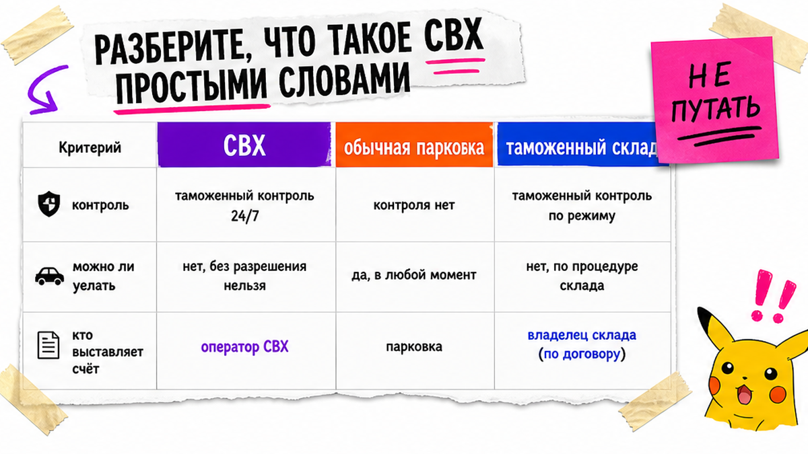
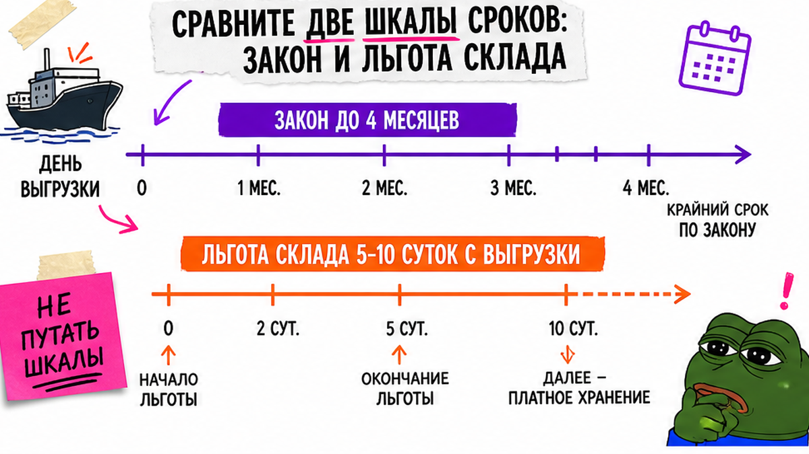

Антон из Тюмени уже внёс депозит за кроссовер. В чате написали: "машина на ВАТ, ждём документы". Он думал, что "на складе" значит бесплатно ждут. Через двенадцать дней пришёл счёт за перестой – льготных суток было пять, а отсчёт шёл с выгрузки судна. Ниже – как работает СВХ Владивосток в 2026, какие вопросы задать до оплаты и как уложиться в льготу без сюрприза по счёту.
TL;DR / Быстрый инсайт: СВХ – охраняемая площадка под таможенным контролем, а не бесплатная парковка. Закон даёт до 4 месяцев хранения, но коммерческая льгота на авто-складах Владивостока обычно 5–10 суток с дня выгрузки. До депозита спросите пять условий: льгота, ПРР, перестой, кто платит, слот выдачи. Готовые суммы пошлин здесь не считаем – актуальный расчёт в каталоге.
Владивосток – хаб ввоза авто из Японии, Кореи и Китая. После порта машина почти всегда попадает на склад временного хранения (СВХ): без выпуска её нельзя просто "забрать и уехать". На практике новичок путает законный максимум и бесплатные сутки оператора – и именно здесь рождается счёт, которого не ждали.
Вы не обязаны быть брокером. Но до перевода депозита обязаны понять, с какого дня считают льготу и кто оплатит простой, если пакет документов зависнет.

На пальцах: СВХ – это охраняемая стоянка, где авто ждёт таможенный выпуск. Пока выпуск не закрыт, машину нельзя свободно вывезти "как с обычной парковки". Хранение коммерческое: склад выставляет тариф, а не "ждёт из вежливости".
Например, формулировка "машина на ВАТ" или "на КМТС" – это конкретные площадки во Владивостоке, а не синоним "всё бесплатно, пока брокер собирает бумаги". Типичная ошибка – услышать "на складе" и решить, что счёт начнётся только когда вы сами "разрешите" хранение.
Сделайте: запишите название СВХ и спросите, с какого события стартует льготный период. Не делайте: путать СВХ с "просто стоянкой у порта" и ждать бесплатного ожидания.

Здесь главный сюрприз 2026 для новичка. По ст. 101 ТК ЕАЭС товары могут лежать на временном хранении до четырёх месяцев – это законный потолок. Но коммерческая льгота на авто-СВХ Владивостока в открытых обзорах обычно 5–10 суток. Дальше тариф растёт ступенями.
| Шкала | Срок | Что это значит для денег | Что спросить |
|---|---|---|---|
| Закон (ТК ЕАЭС) | до 4 месяцев | Максимум нахождения на временном хранении | Не путать с "бесплатно 4 месяца" |
| Льгота склада | обычно 5–10 суток | Окно без/с низким тарифом хранения | Сколько суток именно на вашем СВХ |
| Отсчёт льготы | часто с выгрузки судна | День "брокер занялся" может быть позже | С какого дня считают сутки №1 |
| После льготы | ступени тарифа | Ориентир обзоров: сотни → тысячи ₽/сутки | Таблица ступеней у склада, не "на глаз" |
Вердикт по срокам: четыре месяца – про законный потолок. Деньги сжигает льгота склада. Сделайте сверку "закон ≠ бесплатно". Не делайте ставку на то, что "ещё рано, у нас есть месяцы".
Боль здесь простая: страх счёта после прибытия судна. Лечится не надеждой, а пятью вопросами посреднику или брокеру до оплаты заказа.
Сделайте: сохраните ответы в чате до депозита. Не делайте: переводить деньги, пока нет ясности по льготе и плательщику простоя. На форумах Дальнего Востока типичная картина: счёт склада за хранение платят почти всегда, даже если "кто виноват" ещё спорят.
Актуальный подбор и расчёт под ваш лот – в каталоге avto-sales125.ru. Форм на этой странице нет: детали заказа обсуждают в переписке.
День 0 – не "когда брокер ответил в мессенджере", а выгрузка. Дальше работает простой workflow:
Ритм СВХ → выдача:
Выгрузка судна (день 0) → комплект документов в работу → сверка данных склада и декларации → выпуск → бронь тайм-слота → вывоз / погрузка на автовоз
В реальном проекте перестой после выпуска часто рождается из мелочи: номер, вес или описание в данных склада не совпали с декларацией. Тогда машина уже "готова по смыслу", но склад не отдаёт, пока не сверят поля.
Сделайте: в день выгрузки потребуйте статус "пакет принят в работу" и список недостающих бумаг. Не делайте: ждать конца льготных суток "на всякий случай" – это самый дорогой календарь.
Что раздувает счёт, если смотреть глазами покупателя:
Отдельная ловушка – покупка "авто уже на СВХ" у перекупа. Кажется, что вы экономите время. На деле можете купить чужой простой, чужой неполный пакет и чужой спор "кто платит". Ещё риск – оформление не на себя: потом сложно доказать, что машина ваша, когда склад ждёт оплату.
Сделайте: покупайте цепочку "лот → ваш договор → ваш выпуск", а не "стоит на СВХ, берите быстрее". Не делайте: соглашаться на оформление "на друга брокера", если не понимаете, чем это кончится при выдаче.
После выпуска цепочка такая: подтверждение выпуска → пропуск/слот → выезд со СВХ → дальше самовывоз, автовоз или железная дорога. Владивосток здесь логистический хаб: от выбора следующего плеча зависит, сколько ещё суток машина "живёт" на территории склада после формального выпуска.
Проверьте заранее:
Нужны детали по конкретному заказу – напишите в Telegram @avtosales125. Офис Авто-Сейлс во Владивостоке (Днепровская 40а, стр. 4) как раз рядом с этой логистикой.
Сделайте: бронируйте вывоз в связке с датой выпуска. Не делайте: оставлять "заберём как получится" – после льготы каждый лишний день заметнее.
Критерий успеха простой. Вы объясняете своими словами, что такое СВХ; знаете, что законные 4 месяца ≠ льготные 5–10 суток; у вас есть список из пяти вопросов посреднику; вы не ждёте готовых сумм пошлин из статьи – расчёт берёте в каталоге.
Схема на сегодня:
Открыть чат с посредником → задать 5 вопросов по льготе/ПРР/простою → сверить отсчёт с выгрузки → подготовить пакет до прихода судна → только потом депозит
Если ведёте заказ через Авто-Сейлс, откройте каталог Авто-Сейлс и уточните маршрут под Японию, Корею или Китай – без форм на странице блога.
Материал проверен: Редакция Авто-Сейлс (эксперты по авто под заказ из Японии, Кореи и Китая).
Достоверность: срок временного хранения сверен со ст. 101 ТК ЕАЭС (Consultant); льготные сутки, ПРР и ступени тарифов – с открытыми обзорами авто-СВХ Владивостока 2026 (PeregonPro, WhiteChina) и справочником Контур.Декларант; суммы хранения даны как ориентиры "что спросить у склада", не как прайс компании. Актуальные расчёты заказа – в каталоге.
Законный потолок – до 4 месяцев. Коммерчески выгодное окно обычно короче: ориентир льготы 5–10 суток на конкретном складе. Сделайте запрос тарифа и даты отсчёта до прихода судна, не после счёта.
Да, если выпуск закрыт и склад подтвердил выдачу. Не делайте ставку на "вывезут день в день без слота" – заранее бронируйте окно и документы на воротах.
Включится ступенчатый тариф хранения. Ориентир из обзоров 2026 – рост от сотен до нескольких тысяч рублей в сутки. Проверьте таблицу ступеней у своего СВХ и ускорьте пакет, а не спор в чате.
На практике счёт склада чаще всего оплачивает сторона заказа. Зафиксируйте в договоре/чате, кто несёт перестой при задержке документов, до депозита.
ПРР – разовая операция склада (погрузка/разгрузка и сопутствующие работы), хранение – плата за сутки стоянки. Спросите обе строки отдельно, иначе "дешёвое хранение" маскирует дорогой разовый блок.
Не в статью и не в чужой скрин прайса. Откройте каталог Авто-Сейлс или напишите в Telegram @avtosales125 – статичный калькулятор в блоге намеренно не публикуем.